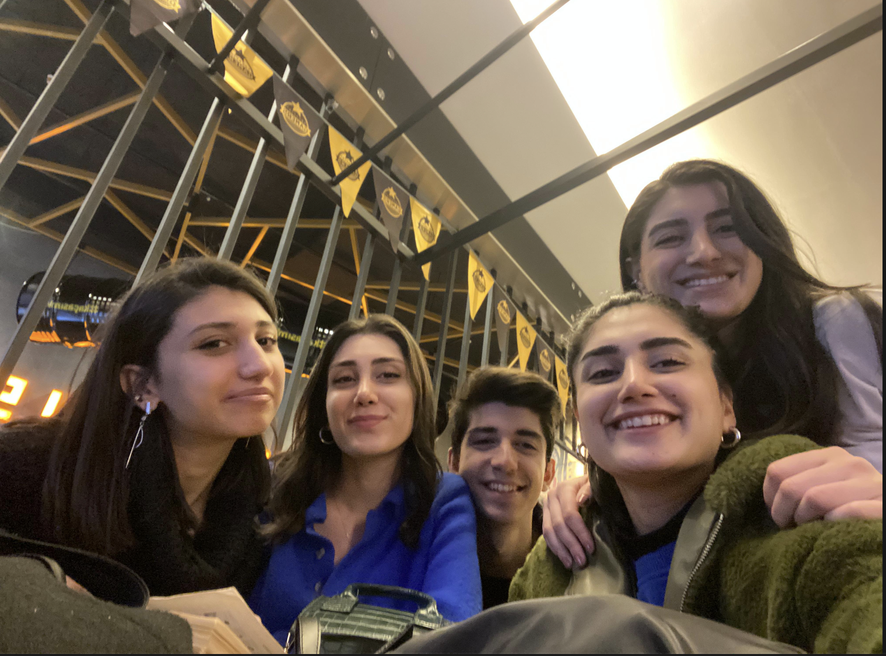
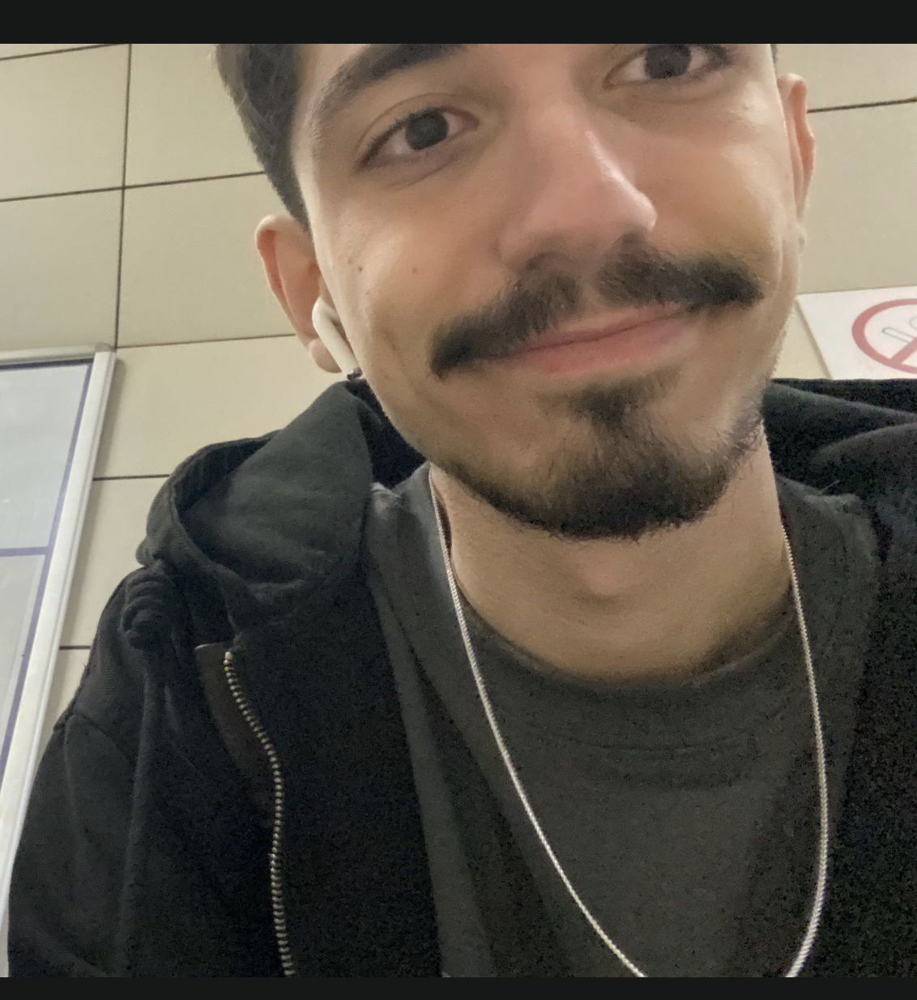
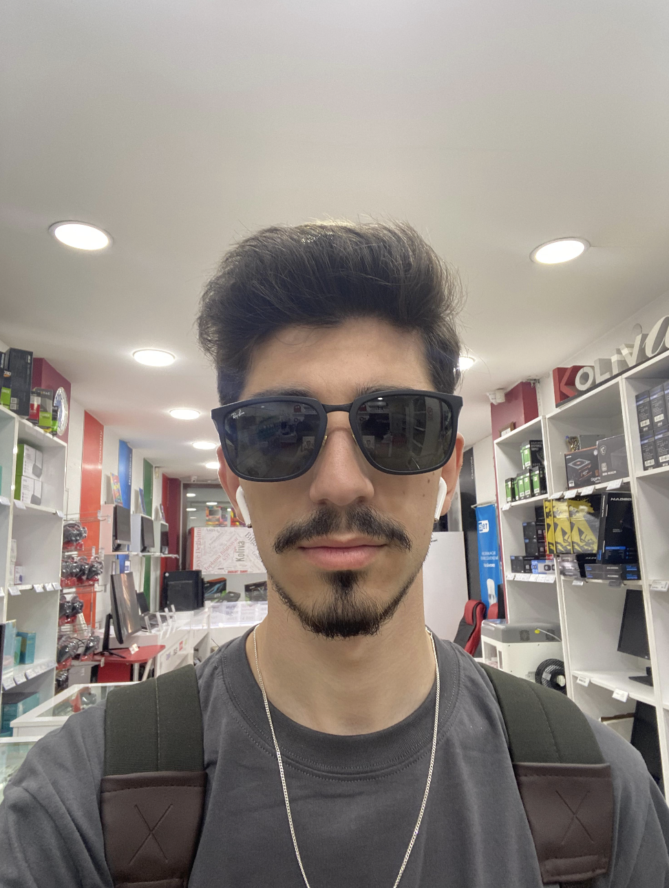

Enes Sabaz
- Yaş: 21
- Meslek: Öğrenci (Herbokolog)
- Hobiler: Oyun Oynamak, Maç İzlemek
- Favori Takım: Galatasaray
- Yaşadığı Şehir: İstanbul
- Kişilik: Her şey hakkında bilgisi var, ailenin profesörü, doğruları karşısında sonuna kadar savaşır, çok düzenli ve hamarat, temizlik ondan sorulur